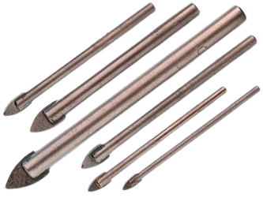
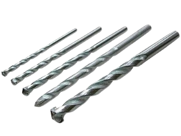
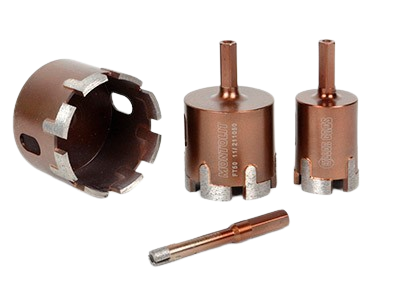
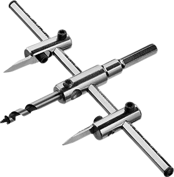

-

8(0152)31-25-61
-

kst@ggkst.by
-

http://ggkst.by
8(0152)31-25-61
kst@ggkst.by
http://ggkst.by
Сверление отверстий
Чтобы выбрать инструмент для сверления плитки, нужно ориентироваться и на виды отделочного материала. Плитка делится на два больших вида – настенная и напольная. Настенная менее толстая и прочная, так как на стенах она не испытывает такой нагрузки, как на полу. Работать с ней несложно, однако нужно обращаться с инструментом бережно, чтобы не повредить верхний слой глазури и предотвратить появление трещин.
Напольная плитка более прочная и надежная, она рассчитана на гораздо большие нагрузки, чем настенная. Поэтому для ее сверления нужны более мощные инструменты. Если в качестве напольного покрытия используется керамогранит или искусственный камень, обычным шуруповертом уже не обойтись. Это материалы высокой прочности и толщины, поэтому для проделывания отверстий в них нужны алмазные коронки и трубчатые сверла.
Какие сверла использовать
Сверла для плитки отличаются от обычных. Главная часть обычного сверла - режущая кромка, которая и проделывает отверстие в материале. В случае с керамической плиткой обычного сверла недостаточно - его режущая кромка нагревается от контакта со слишком твердым материалом и деформируется. Сверло больше никуда не годится и его можно выбросить.
Сверло для керамической плитки устроено по-другому – оно покрыто абразивным веществом, прочность которого гораздо выше прочности кафеля. Абразив на высокой скорости вращения сверла как бы снимает частички с кафеля, и получается отверстие нужного диаметра.
Есть несколько видов сверл, подходящих для керамической плитки:
копьевидные – для кафельной плитки низкой прочности, обычно это эконом-сегмент. Называется так из-за сходства сверла с наконечником копья. Такие сверла можно покрывать алмазным напылением, и тогда их можно использовать для самых прочных материалов.

победитовое сверло – производится из прочного сплава, имеет острую режущую кромку.

алмазные коронки – используются для самых твердых материалов: керамогранита или искусственного камня.

сверло “балеринка” – здесь может быть как одно, так и два сверла, использование такого типа сверла позволяет изменять диаметр отверстия.

Чтобы выбрать подходящее для работы сверло, нужно ориентироваться на прочность плитки и ее толщину. Чаще всего для сверления отверстий в кафеле используют копьевидные сверла – они эффективны в работе и вписываются в любой бюджет. Если отверстие нужно сделать в толстом керамограните, лучше всего взять алмазную коронку. Победитовые сверла нужно использовать осторожно, поэтому ими пользуются в основном профессионалы.
Подготовка
У плитки гладкая поверхность, и чтобы сверло не скользило, специалисты советуют приклеить поверх точки, в которую должно упереться сверло, скотч. Можно использовать другой метод – с помощью специального инструмента керна сделать небольшую лунку там, где нанесена отметка. Достаточно просто поставить керн в центр разметки и ударить по нему молотком.
Как сверлить
Начать сверлить лучше в безударном режиме – на небольших скоростях, чтобы потом все больше и больше углубляться в отверстие. Особенная осторожность нужна на этапах прохождения глазури, затем скорость можно увеличить. Однако слишком усердствовать не стоит - режущие кромки перегреваются и начинается вибрация инструмента. Чтобы продлить жизнь инструменту, рекомендуется постоянно охлаждать его водой. Если на горизонтальной поверхности это сделать удобно, то для сверления отверстий на вертикальной поверхности лучше использовать редуктор или другие приспособления. После того, как сверло прошло плитку, нужно сменить насадку - на ту, что подходит для бетона или дерева, в зависимости от материал, из которого состоят стены.
Технология сверления отверстий в плитке зависит от выбранного инструмента:
Шуруповерт – мощный и удобный инструмент, который легко справится с настенной плиткой. Но нужно учитывать, что бетон, из которого состоит стена, он не возьмет, так что придется взять более мощный инструмент для более глубокого отверстия.
Дрель – инструмент, который используется чаще всего для работы с керамической плиткой. Сверло его небольшого диаметра, а мощность его позволяет справиться с плотной кафельной плиткой. Для начала нужно установить сверло в патрон и убедиться, что оно прочно там стоит. Если сверло перекосит, оно может поцарапать или даже расколоть плитку. Поставьте маркером на плитке отметку и ударьте по ней керном – это поможет сверлу не выйти за пределы нужного отверстия. Поставьте сверло под прямым углом к плитке и начинайте сверлить отверстие. Не меняйте угол и интенсивность вращения сверла, обороты должны быть невысокими. Раз в 10-15 секунд погружайте сверло в воду, чтобы не допустить его перегрева.
Перфоратор – с этим инструментом сложно работать, поэтому его используют только профессионалы, в совершенстве знающие все минусы перфоратора. А их в случае работы с кафельной плиткой немало: из-за большого веса инструмента меняется угол наклона сверла, поэтому отверстие может получиться неровным. У перфоратора длинные сверла, которые люфтят при работе, в итоге на плитке появляются царапины. И еще – для этого инструмента характерна высокая скорость вращения сверла, поэтому плитка может перегреться и лопнуть. Для масштабных работ по кафельной плитке лучше перфоратор не использовать, максимум пара отверстий.
Изготовление отверстий малого диаметра
Выбор инструмента зависит и от того, какие именно отверстия нужно проделать в кафельной плитке. Для отверстий маленького диаметра лучше всего подойдет копьевидное сверло или алмазная коронка.
Чаще всего небольшие отверстия в плитке предназначены для анкеров или дюбелей, например, для компактной полочки или зеркала. Обычно это 6-8 мм в диаметре. Лучше всего для такой цели подойдет копьевидное сверло соответствующего диаметра. Сначала делается проход в плитку, затем меняется сверло и бурится нужное отверстие в бетонной или кирпичной стене.
Изготовление больших отверстий
Для проделывания больших отверстий лучше всего воспользоваться балеринкой – основной и вспомогательный резцы помогут сделать отверстие большого диаметра и увеличить его при необходимости. Алмазная коронка тоже подойдет – к тому же с ее помощью можно проделать отверстие в особо прочных материалах, например керамограните или искусственном камне. Но и тут есть нюанс - коронки лучше всего работают в стационарных станках, поэтому для сверления отверстий в уже наклеенной плитке не подходит. А вот балеринка более неприхотлива к условиям работы - ее можно использовать как для еще не установленного материала, так и для плитки, которая уже приклеена к стене.
Строительные растворы. Виды и классификация